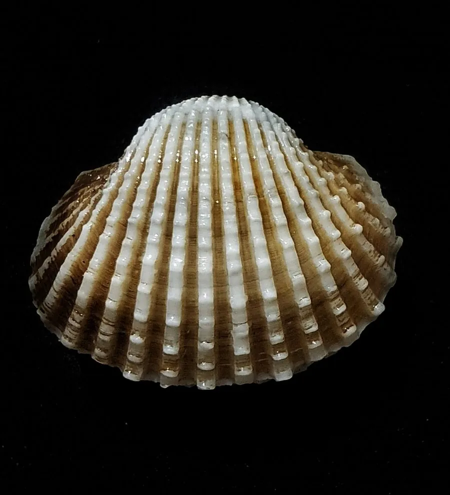

软体动物 · 动物界
血蚶 Tegillarca granosa

壳面有放射状纵肋、肉色血红的蚶类，中国东南沿海常烫至半熟食用，是春节前后餐桌上的传统海味。
- 分类
- 门软体动物门纲双壳纲目蚶目科蚶科属泥蚶属
- 栖息环境
- 河口和近岸的软泥滩涂，水深数米以内
- 地理分布
- 印度洋至西太平洋沿岸，包括中国东南沿海、日本、朝鲜半岛和东南亚
- 保护级别
- 尚无保护级别；野生种群受滩涂开发和采捕影响
物种志
血蚶的贝壳呈卵圆形，壳长约三至五厘米，壳质坚厚，两壳膨凸，壳面有十八条左右的放射状纵肋，肋上生有细小的结节，壳色白或灰白，表面常被一层黑褐色的绒毛状角质皮覆盖。壳内面呈白色，壳缘有细齿。它的足部发达，血液中含有大量血红蛋白，肉呈鲜红色，血蚶之名由此而来。它靠足部在泥沙中掘穴生活，水管短，滤食浮游植物。
它分布于印度洋至西太平洋沿岸，包括中国东南沿海、日本、朝鲜半岛、东南亚和澳大利亚北部，栖息在河口和近岸的软泥滩涂，水深数米以内，常成群密集分布。它以硅藻和有机碎屑为食，生长较快，一至两年即可达到商品规格。血蚶是中国东南沿海重要的养殖贝类，潮汕、闽南一带习惯用沸水烫至半熟后蘸料食用，味道鲜美，但生食有感染寄生虫和细菌的风险。目前尚无保护级别，野生种群受滩涂开发和采捕影响。
形态与习性
- 食性滤食硅藻和有机碎屑
- 壳长约三至五厘米，壳面有十八条左右纵肋
- 肉色血液含血红蛋白，肉呈鲜红色
- 栖息环境河口和近岸软泥滩涂，常成群密集
- 生长一至两年可达商品规格
- 食用东南沿海常烫至半熟食用，生食有风险
趣味知识
- 血蚶切开后流出鲜红的汁液，这是血红蛋白造成的，在贝类中并不常见。
- 潮汕人吃血蚶只用沸水烫几秒，讲究壳开肉红，但这样吃有感染风险。
- 它的壳面有十八条左右的放射肋，肋上还长着一排小疙瘩。